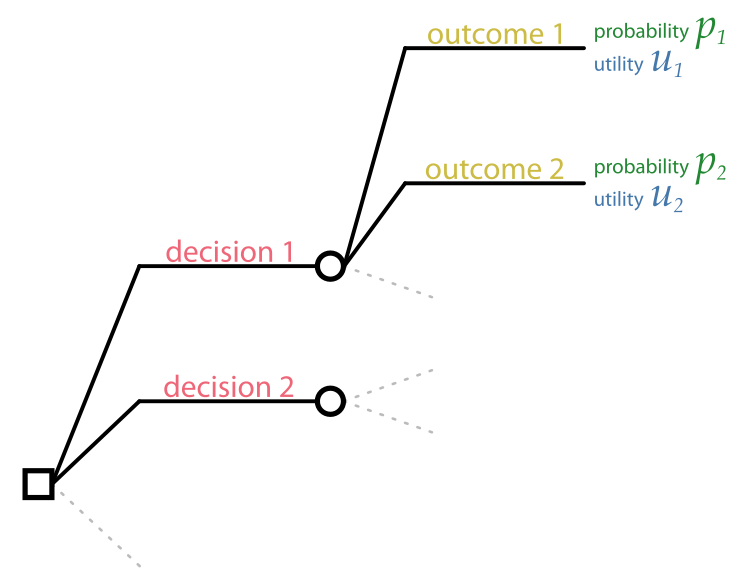
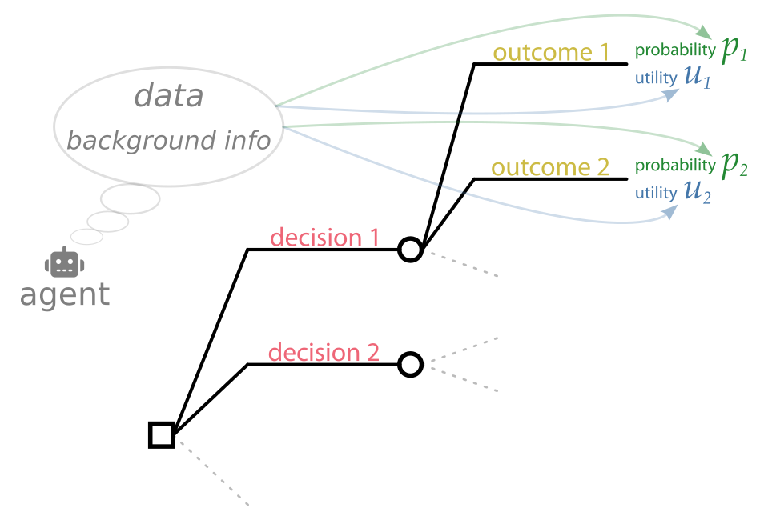

3 Basic decision problems
\(\DeclarePairedDelimiter{\set}{\{}{\}}\)
Decision Theory analyses any decision-making problem in terms of nested or sequential basic or minimal decision problems. The assembly-line scenario of the introduction 1 is an example.
3.1 Graphical representation and elements
A basic decision problem can be represented by a diagram like this:

It has one decision node, usually represented by a square , from which the available decisions depart as lines. Each decision leads to an inference node,1 usually represented by a circle , from which the possible outcomes depart as lines. Each outcome leads to a particular gain or loss, depending on the decision. The uncertainty of each outcome is quantified by a probability.
1 also called chance node or uncertainty node
A basic decision problem is analysed in terms of the following elements:
- Agent, and background or prior information. The agent is the person or device that has to make the decision. An agent possesses (or has been programmed with) specific background information that is used and taken for granted in the decision-making process. This background information determines the probabilities, gains, and losses of the outcomes, together with other available data and information. Different agents typically have different background information.
Agent means “conductor”, “mover”, and similar (from Latin ago = to move or drive and similar meanings).
We’ll use the neutral pronouns it/its when referring to an agent, since an agent could be a person or a machine.
Data and other additional information, sometimes called evidence. They differ from the background information in that they can change with every decision instance made by the same agent, while the background information stays the same. In the assembly-line scenario, for example, the test results could be different for every new electric component.
Decisions available to the agent. They are assumed to be mutually exclusive and exhaustive; this can always be achieved by recombining them if necessary, as we’ll discuss later.
Decisions are called courses of action in some literature.
- Outcomes of the possible decisions. Every decision can have a different set of outcomes, or some outcomes can appear for several or all decisions (in this case they are reported multiple times in the decision diagram). Note that even if an outcome can happen for two or more different decisions, its probabilities can still be different depending on the decision.
Many other terms instead of outcome are used in the literature, for instance state or event.
Probabilities for each of the outcomes and for each decision. Their values typically depend also on the background information and the additional data.
Utilities: the gains or losses associated with each possible outcome and each decision. We shall mainly use the term utility, instead of “gain”, “loss”, and similar, for several reasons:
- gain and losses may involve not money, but time, or energy, or health, or emotional value, or other kinds of commodities and things that are important to us; or even a combination of them. The term “utility” is useful as a neutral term that doesn’t mean “money”, but depends on the context
- we can just use one term instead of two: for example, when the utility is positive it’s a “gain”; when it’s negative it’s a “loss”
The particular numerical values of the utilities are always context-dependent: they may depend on the background information, the decisions, the outcomes, and the additional data.
We shall sometimes use the generic currency sign ¤ to denote utilities, to make clear that gains and losses do not necessarily involve money, and not to reference any country in particular.
The relation between the elements above can be depicted as follows – but note that this is just an intuitive illustration: 
Some of the decision-problem elements listed above may need to be in turn analysed by a decision sub-problem. For instance, the utilities could depend on uncertain factors: thus we have a decision sub-problem to determine the optimal values to be used for the utilities of the main problem. This is an example of the modular character of decision theory.
We shall soon see how to mathematically represent these elements.
The elements above must be identified unambiguously in every decision problem. The analysis into these elements greatly helps in making the problem and its solution well-defined.
An advantage of decision theory is that its application forces us to make sense of an engineering problem. A useful procedure is to formulate the general problem in terms of the elements above, identifying them clearly. If the definition of any of the terms involves uncertainty of further decisions, then we analyse it in turn as a decision sub-problem, and so on.
Suppose someone (probably a politician) says: “We must solve the energy crisis by reducing energy consumption or producing more energy”. From a decision-making point of view, this person has effectively said nothing whatsoever. By definition the “energy crisis” is the problem that energy production doesn’t meet demand. So this person has only said “we would like the problem to be solved”, without specifying any solution. A decision-theory approach to this problem requires us to specify which concrete courses of action should be taken for reducing consumption or increasing productions, and what their probable outcomes, costs, and gains would be.
3.2 Setting up a basic decision problem
A basic decision problem can be set up along the following steps (which we illustrate afterwards with a couple of examples):
Example: the assembly-line problem
Let’s apply the steps above in the assembly-line example of ch. 1:
1. List all available decisions
Easy: they are “accept the electronic component” and “discard it”.
2. For each decision, list its possible outcomes
In general you will notice that some outcomes may be common to all decisions, while other outcomes can happen for some decisions only, or even for just one decision.
In the present example, the accept decision has two possible outcomes: “the component works with no faults for at least a year” and “the component fails within a year”.
The discard cannot have those outcomes, because the component is discarded. It has indeed only one outcome: “component discarded”.
3. Pool together all outcomes of all decisions, counting the common ones only once
In total we have three pooled outcomes:
- no faults (from the accept decision)
- fails (from the accept decision)
- discarded (from the discard decision)
4. Prepare two tables: in each, display the decisions as rows, and the pooled outcomes as columns (or you can do the opposite: decisions as columns and outcomes as rows)
In the present example each table looks like this:
| no faults for a year | fails within a year | discarded | |
|---|---|---|---|
| accept | |||
| discard |
5. In one table, report the probabilities for all decision-outcome pairs. If an outcome is not available for that decision, give it a \(0\%\) probability
| no faults for a year | fails within a year | discarded | |
|---|---|---|---|
| accept | \(90\%\) | \(10\%\) | \(0\%\) |
| discard | \(0\%\) | \(0\%\) | \(100\%\) |
Note how the outcomes that do not exist for a particular decision have been given a \(0\%\) probability (in grey). This is just a way of saying “this outcome can’t happen, if this decision is made”.
6. In the other table, report the utilities for all decision-outcome pairs. If an outcome is not available for that decision, give it a \(0\) utility
| no faults for a year | fails within a year | discarded | |
|---|---|---|---|
| accept | \(+1\$\) | \(-11\$\) | \(0\$\) |
| discard | \(0\$\) | \(0\$\) | \(0\$\) |
Note how the outcomes that do not exist for a particular decision have been given a \(0\$\) utility (in grey). We shall see later that it actually doesn’t matter which utilities we give to these impossible outcomes.
3.3 How to make a basic decision?
Up to now we have seen what are the elements of a basic decision problem, and how to arrange them in a diagram and with tables. But how do we determine what’s the optimal decision?
Decision Theory says that the optimal decision is determined by the “principle of maximal expected utility”.
We shall study this principle more in detail toward the end of the course, although you already know its basic idea, because you intuitively used this very principle in solving all decision problems we met so far, starting from the assembly-line one.
However, let’s quickly describe already now the basic procedure for this principle:
This procedure can also be described in terms of the probability and utility tables introduced in the previous section:
- Multiply element-by-element the probability table and the utility table, obtaining a new table with the same number of rows and columns
- Sum up the elements of each row of the new table (this sum is the expected utility); remember that every row corresponds to a decision
- Choose the decision corresponding to the largest of the sums above; if there are several maximal ones, choose among them unsystematically
Example: the assembly-line problem
Multiplying the Probability table and the Utility table above, element-by-element, we obtain the following table, where we also indicate the sum of each row:
| no faults for a year | fails within a year | discarded | sum | |
|---|---|---|---|---|
| accept | \(+0.9\$\) | \(-1.1\$\) | \(0\$\) | \(\boldsymbol{-0.2\$}\) |
| discard | \(0\$\) | \(0\$\) | \(0\$\) | \(\boldsymbol{0\$}\) |
and, as we already knew, discarding the electronic component is the decision with the maximal expected utility.
3.4 Plan for the next chapters
The expected-utility maximization above is intuitive and simple, and is the last stage in a basic decision problem.
But there are two stages which occur before, and which are the most difficult:
- Inference
- is the stage where the probabilities of the possible outcomes are calculated. Its rules are given by the Probability Calculus. Inference is independent from decision: in some situations we may simply wish to assess whether some hypotheses, conjectures, or outcomes are more or less plausible than others, without making any decision. This kind of assessment can be very important in problems of communication and storage, and it is specially considered by Information Theory.
The calculation of probabilities can be the part that demands most thinking, time, and computational resources in a decision problem. It is also the part that typically makes most use of data – and where data can be most easily misused.
Roughly half of this course will be devoted in understanding the laws of inference, their applications, uses, and misuses.
- Utility assesment
-
is the stage where the gains or losses of the possible outcomes are calculated. Often this stage requires further inferences and further decision-making sub-problems. The theory underlying utility assessment is still much underdeveloped, compared to probability theory.
We shall now explore each of these two stages. We take up inference first because it is the most demanding and probably the one that can be optimized the most by new technologies.